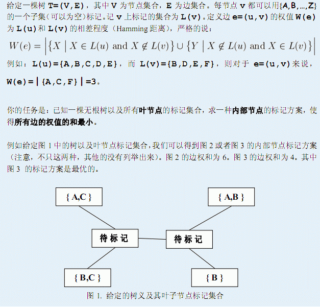
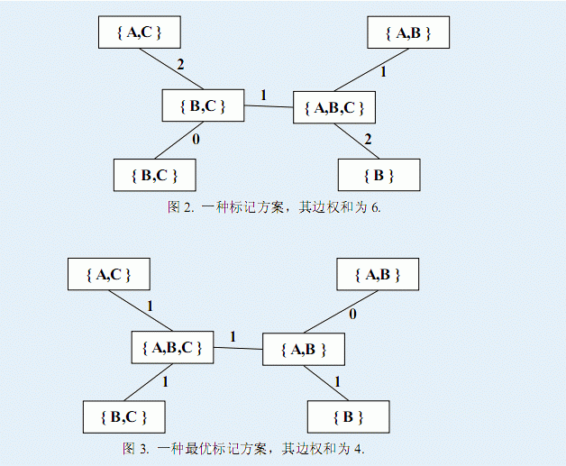

第一行为N和L，其中N<=50000,表示树的节点数目，L表示叶节点的数目。 树的节点从1到N编号，接下来N-1行，每个两个整数U，V，表示U与V间有边。 然后是L行，每行一个整数和一个字符串，整数表示叶子节点的编号，字符 串表示此个点的标记集合，需要注意的是节点的标记集合可以是空集，对应 字符串为$
输出能实现的最小边权和
6 4 1 3 2 4 3 4 5 3 4 6 1 AC 2 AB 5 BC 6 B
4